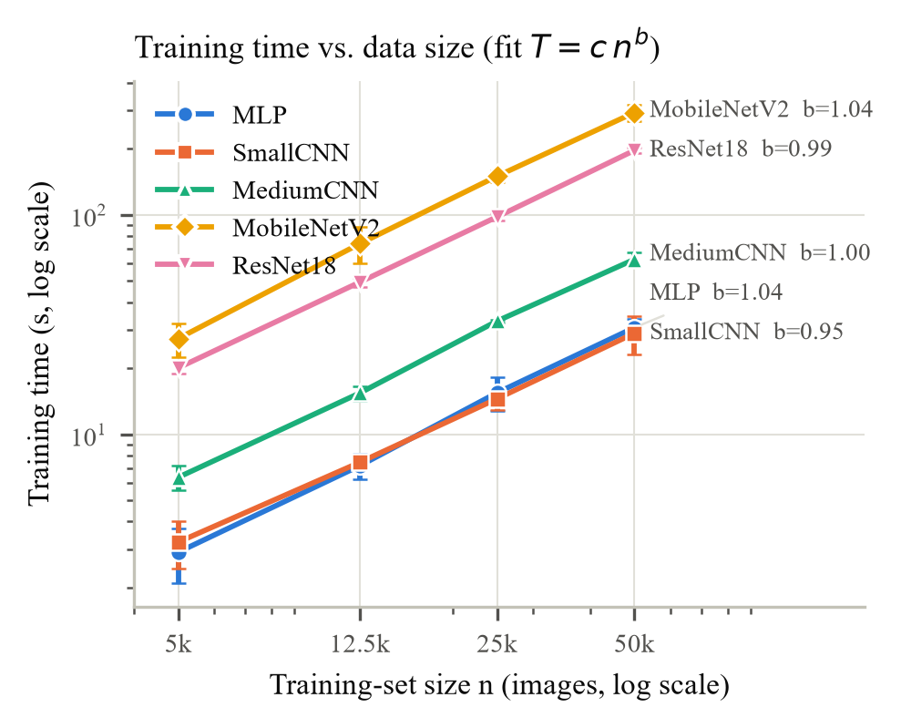
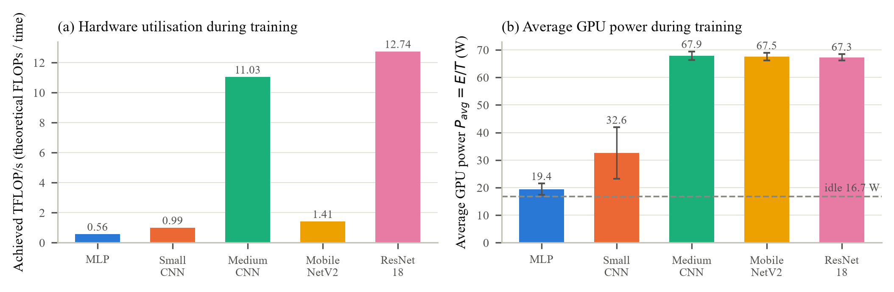
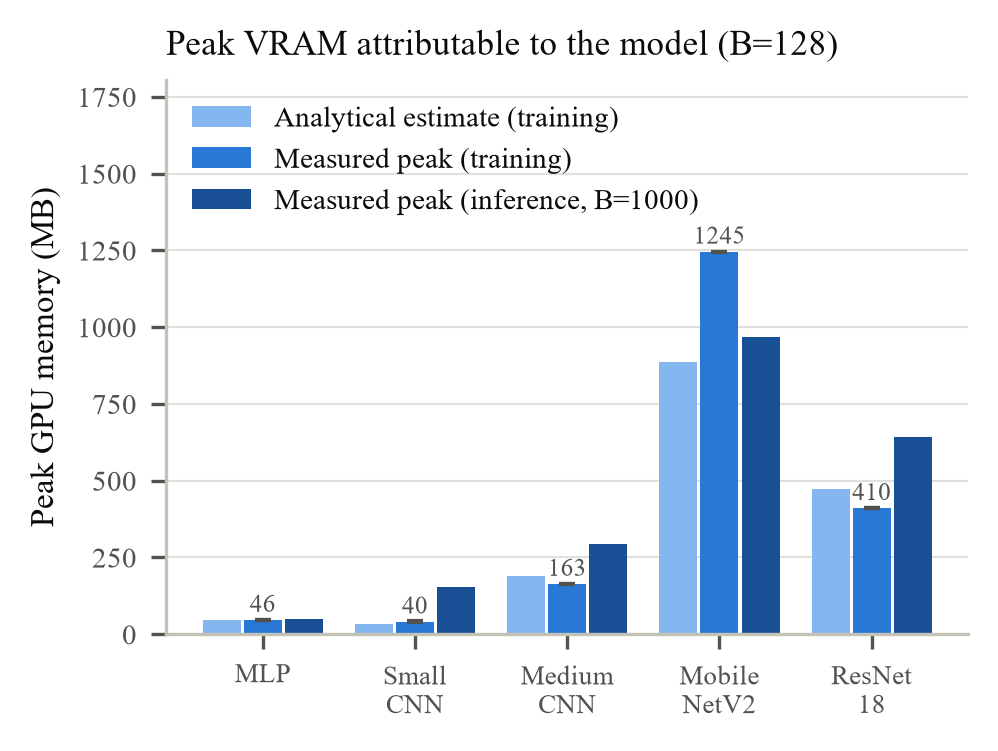
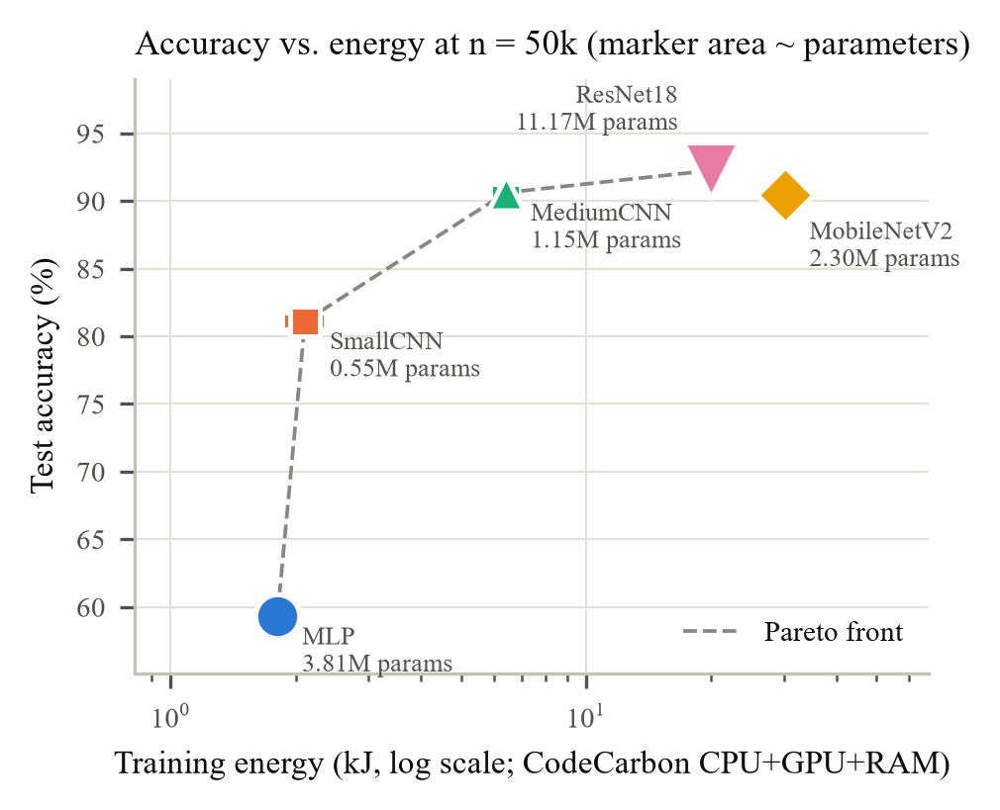
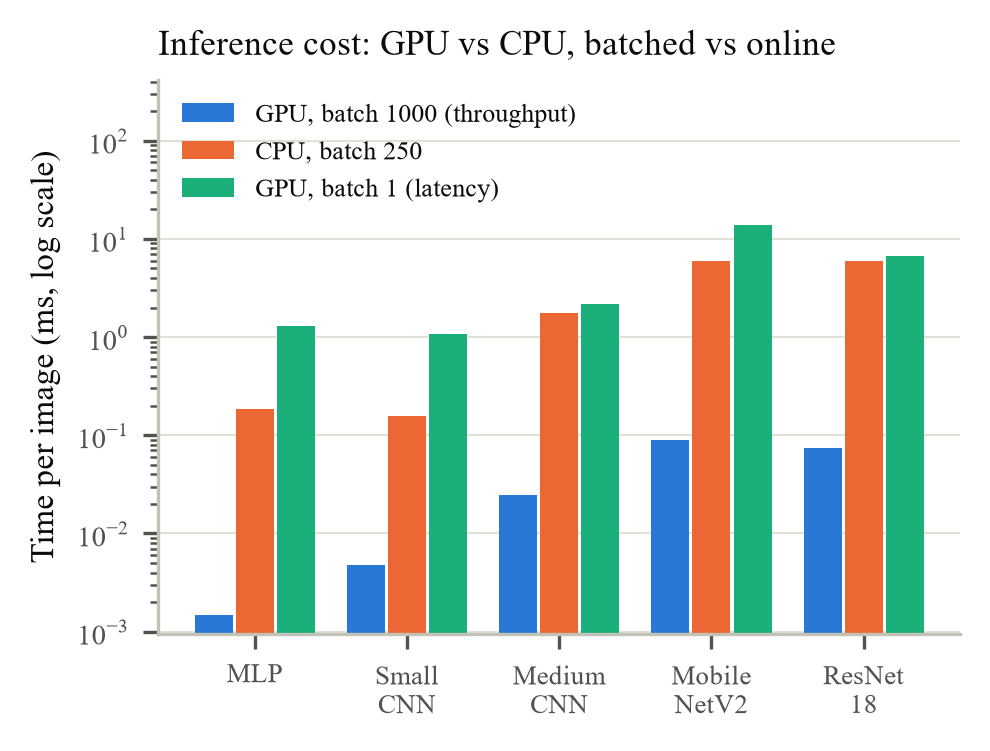
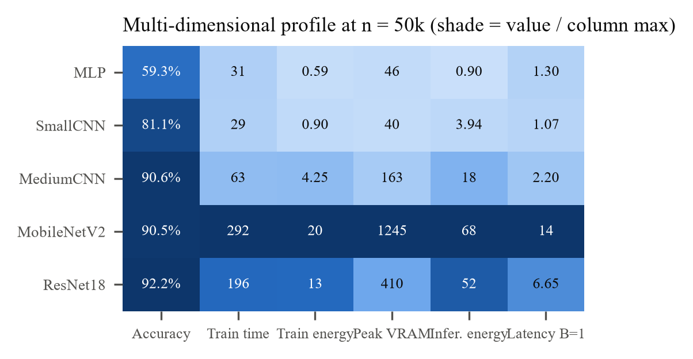

BYM303 Algoritma Analizi · Dönem Projesi 2026–2027
5 model · 4 veri boyutu · 5 tekrar = 100 ölçümlü eğitim — RTX 4060 Laptop GPU
Baran Kemal Kılıç
240609043
İrem Serra Onmaz
240609009
Nihat Güney
240609050
Süleyman Canberk Eğriboz
240609014
Problem
Klasik analiz T(n) ve S(n) ile yetinir. Yapay zekâ modellerinde üçüncü bir kaynak eşit derecede önemli: enerji.
Formül enerjiyi süreye indirger gibi görünür. Ama Port sabit değil: donanımın ne kadar yoğun kullanıldığına, yani algoritmanın kendisine bağlı.
Eğitim ve tahmin süresi ayrı ayrı
Peak RAM ve peak VRAM
Joule, Wh, g CO₂
Accuracy, Precision, Recall, F1, ROC-AUC
Araştırma soruları
| # | Hipotez | Teorik dayanak |
|---|---|---|
| H1 | Eğitim süresi ve enerjisi veri boyutuyla doğrusal büyür (eğim b ≈ 1) | W = 3·F·n·E = Θ(n) |
| H2 | Modeller arası maliyet işlem sayısına (F) göre sıralanır ama F ile orantılı değildir | Roofline modeli |
| H3 | Eğitim belleği parametrelerle değil aktivasyonlarla belirlenir | M = 3·4P + B·A·2 |
| H4 | Ortalama güç modele göre değişir; enerji, süre × sabit değildir | E = Port × T |
| H5 | Doğruluk artar ama joule başına getiri azalır | Ölçekleme yasaları |
Deney düzeni
5
model: MLP, SmallCNN, MediumCNN, MobileNetV2, ResNet-18
4
veri boyutu: 5k · 12,5k · 25k · 50k görüntü (stratified)
5
tekrar (seed 0–4), mean ± std raporlanır
100
ölçümlü eğitim + inference koşusu
60.000 adet 32×32 RGB görüntü, 10 dengeli sınıf. 50.000 eğitim, 10.000 test. Tüm modeller aynı 10k test kümesinde değerlendirilir.
15 epoch · batch 128 · SGD + Nesterov · one-cycle LR · bfloat16 karma hassasiyet · aynı seed → tüm modellerde aynı alt küme
Modeller ve teorik maliyet
| Model | Yapı | Parametre P | MACs / görüntü F | Aktivasyon A |
|---|---|---|---|---|
| MLP | 3 gizli tam bağlı katman | 3,81 M | 3,8 M | 5 K |
| SmallCNN | 2 konvolüsyon + FC | 0,55 M | 6,1 M | 115 K |
| MediumCNN | VGG tarzı 6 konv. + BN | 1,15 M | 152,8 M | 717 K |
| MobileNetV2 | Depthwise ayrışık, 17 blok | 2,30 M | 91,2 M | 3.521 K |
| ResNet-18 | Residual, 8 temel blok | 11,17 M | 555,4 M | 1.417 K |
MLP’nin parametresi çok ama işlemi az (her ağırlık bir kez kullanılır). Konvolüsyonda her ağırlık her piksel konumunda tekrar kullanılır. MobileNetV2, ResNet-18’den 6 kat az işlem ama 2,5 kat fazla aktivasyon üretir.
Teorik karmaşıklık
İleri geçiş F, geri geçiş ≈ 2F. F ve E sabitken eğitim Θ(n), inference Θ(m).
Ağırlık + gradyan + momentum, artı batch’in aktivasyonları. Veri boyutu n’den bağımsız.
Byte başına az işlem yapan katman (depthwise konv.) bellek bant genişliğini bekler: FLOP azalsa da hızlanmaz.
Ölçüm yöntemi
| Boyut | Araç | Not |
|---|---|---|
| Zaman | perf_counter + cuda.synchronize() | GPU asenkron; senkronize etmeden ölçüm yanlış olur |
| RAM | psutil, 50 ms örnekleme | Süreç peak RSS |
| VRAM | PyTorch allocator + NVML | Modele ait peak bellek |
| GPU enerjisi | NVML donanım enerji sayacı | Gerçek ölçüm (mJ) |
| CPU/RAM enerjisi, CO₂ | CodeCarbon 3.3.3, Türkiye şebekesi | Tahmin (Windows’ta RAPL yok) |
| Performans | scikit-learn | Accuracy, P, R, F1, ROC-AUC |
Donanım: Intel i7-12700H · 32 GB RAM · RTX 4060 Laptop 8 GB (100 W) · Windows 11 · Python 3.12 · PyTorch 2.6 + CUDA 12.4
Sonuç 1 · Veri boyutuyla ölçeklenme (H1)

b = 0,95 – 1,04; %95 güven aralıklarının hepsi 1’i içeriyor.
Teorideki W = 3·F·n·E → Θ(n) tahmini doğrulandı.
MLP ve SmallCNN aynı hızda (≈40 µs/görüntü) çalışıyor, işlem sayıları farklı olsa da: adım başına sabit maliyet baskın. T(n) = c·n’deki c, F’yi izlemiyor.
Enerji ise MLP (b = 0,91) ve ResNet-18’de (b = 0,96) doğrusalın altında: uzun koşularda ortalama güç düşüyor.
Sonuç 2 · Teori ve ölçüm (H2, H4)

MobileNetV2: 6 kat az işlem ama 9 kat düşük verim (1,4 vs 12,7 TFLOP/s), 1,5 kat yavaş. Depthwise katmanlar bellek-sınırlı.
E ≠ sabit × T: MLP 19 W ile boştaki güce (16,7 W) yakın; enerjisinin çoğu bekleme. Büyük modeller ≈67 W güç sınırında.
Sonuç 3 · Bellek (H3)

Teori–ölçüm korelasyonu r = 0,98
MobileNetV2: 2,3 M parametre ama 1.245 MB. ResNet-18: 11,2 M parametre ama 410 MB. Sebep: MobileNetV2 görüntü başına 2,5 kat fazla aktivasyon saklıyor.
VRAM veri boyutundan bağımsız (eğim < 0,004): bellek Θ(1) · n.
Süreç RAM’i 710–950 MB, modelden neredeyse bağımsız (veri GPU’da).
Sonuç 4 · Doğruluk–enerji dengesi (H5)

| Model | Doğruluk | GPU enerji | CO₂ |
|---|---|---|---|
| MLP | %59,3 | 0,59 kJ | 0,24 g |
| SmallCNN | %81,1 | 0,90 kJ | 0,28 g |
| MediumCNN | %90,6 | 4,25 kJ | 0,85 g |
| MobileNetV2 | %90,5 | 19,71 kJ | 3,96 g |
| ResNet-18 | %92,2 | 13,21 kJ | 2,63 g |
ResNet-18’in fazladan 1,6 puanı 3,1 kat enerji ister: puan başına 5,5 kJ. MobileNetV2, MediumCNN ile aynı doğrulukta (p = 0,25) ama 4,6 kat enerji harcıyor.
Sonuç 5 · Tahmin (inference)

| Model | Katman | Gecikme (B = 1) |
|---|---|---|
| SmallCNN | 4 | 1,07 ms |
| MLP | 4 | 1,30 ms |
| MediumCNN | 7 | 2,20 ms |
| ResNet-18 | 21 | 6,65 ms |
| MobileNetV2 | 58 | 13,87 ms |
GPU, CPU’dan 33–125 kat hızlı (batch). Ama küçük modeller CPU’da 0,16–0,19 ms/görüntü ile tekil GPU isteğinden bile hızlı: gömülü sistemler için CPU yeterli.
Özet profil

156,7 Wh
100 eğitimin toplam enerjisi (1,57 saat eğitim)
74,4 g
toplam CO₂-eşdeğeri, Türkiye şebekesi
%64
enerjinin GPU payı (CPU %26, RAM %10)
Sonuç
Eğitim süresi Θ(n): tüm eğimler ≈ 1. Bellek n’den bağımsız ve 3·4P + B·A modelini izliyor (r = 0,98).
Aritmetik yoğunluk, derinlik ve adım başına sabit maliyet: 6 kat az FLOP’lu MobileNetV2 daha yavaş, daha çok bellek ve enerji harcıyor.
Port modele ve koşu süresine göre değişiyor. Enerji süreden çıkarılamaz, ölçülmeli.
Öneri: MediumCNN, ResNet-18’in doğruluğunun %98’ini enerjisinin üçte biriyle veriyor. Gelecek çalışma: Linux/RAPL ile CPU enerjisi, batch boyutu, quantization, Transformer modelleri.
Ekip
240609043
Deney altyapısı ve ölçüm (run_experiments.py, measure.py)
240609009
Model mimarileri ve doğruluk analizi (models.py)
240609050
Teorik karmaşıklık ve bellek modeli (complexity.py)
240609014
İstatistik, grafikler ve trade-off analizi (analyze.py)
Kod, ham veri (100 koşu) ve makale: proje klasörü · IEEE konferans formatı (AISCI 2027)